Selected Projects
Deep learning systems, research prototypes, and autonomous robotic frameworks.
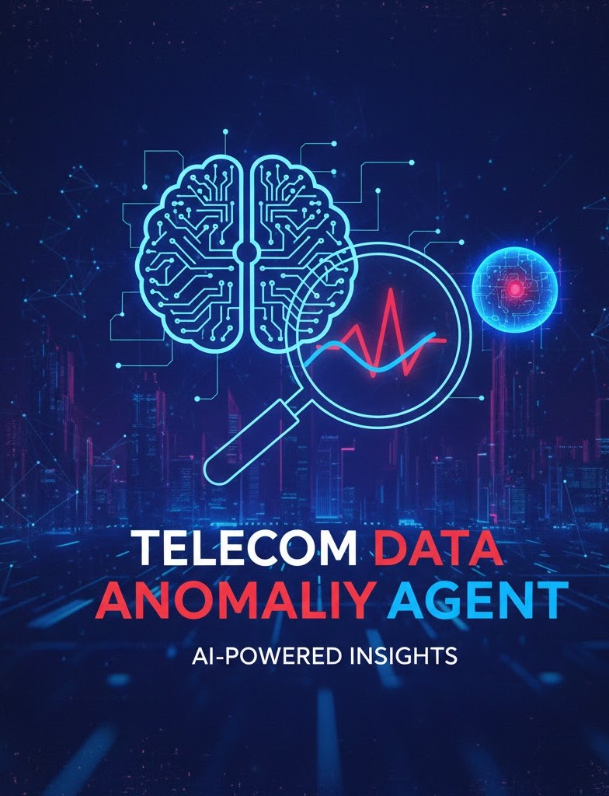
Telecom KPI Anomaly Detection Using AI Agents
Multi-agent AI orchestration with LangGraph, MCP, and anomaly detection models for real-time monitoring across 100+ sites.
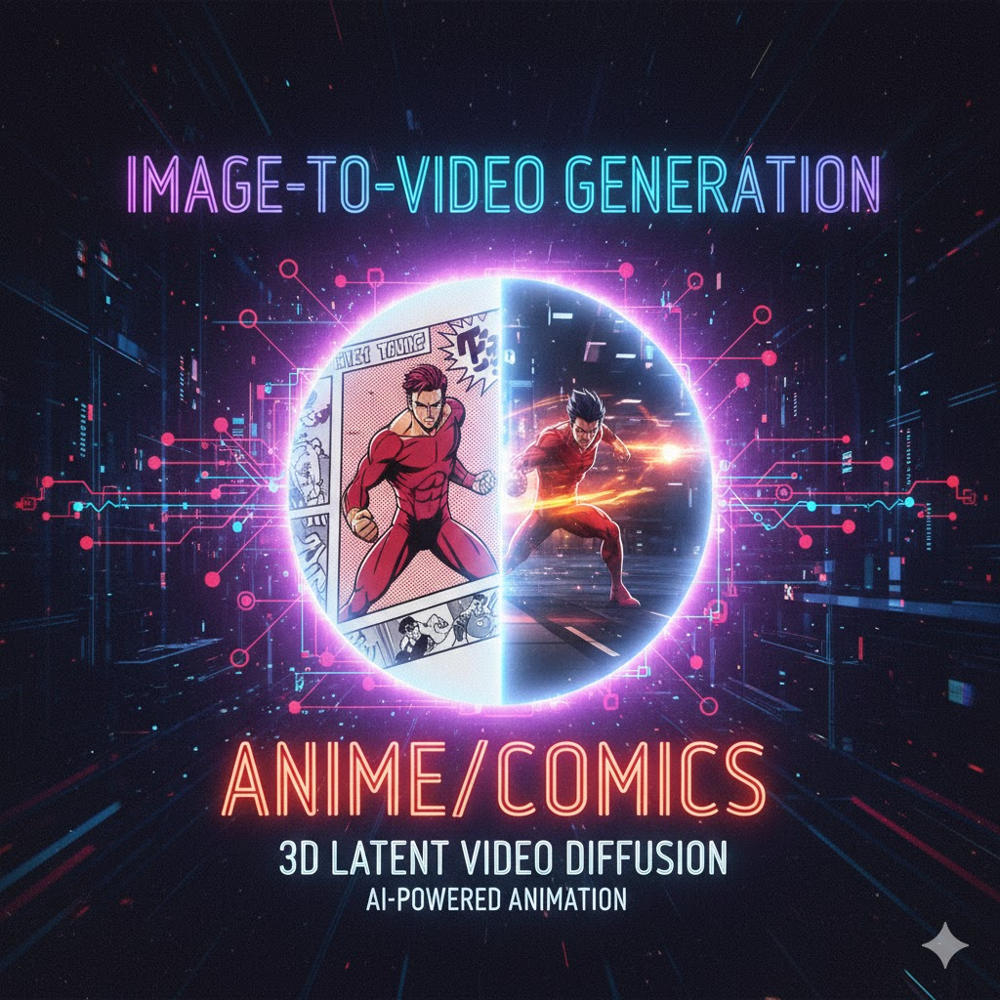
Image-to-Video Generation of Anime
3D latent video diffusion models delivering a 71.8% SSIM improvements over baseline frame interpolation standards.
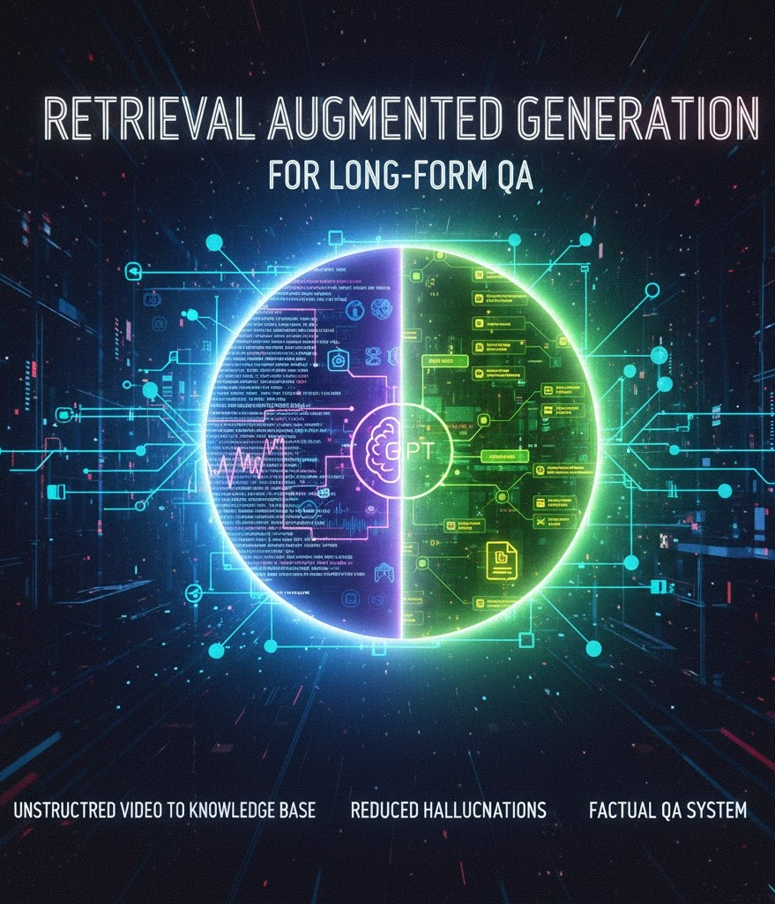
RAG YouTube Long-Form QA
RAG pipeline parsing complex media transcripts into a vector database for semantic, chunked document lookup.
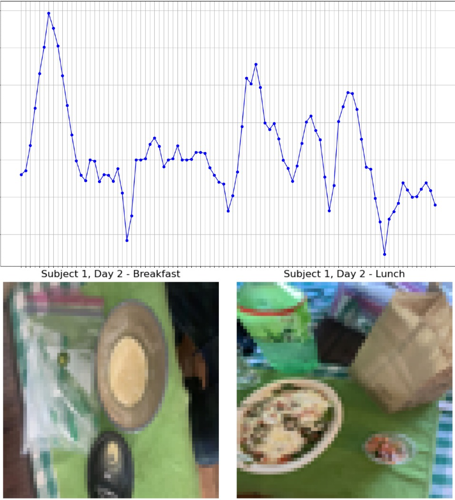
Meal Nutrition Analysis via Multi-Modal DL
Integrated CNNs, LSTMs, and demographics embeddings to yield a 34% accuracy boost over standard baseline models.
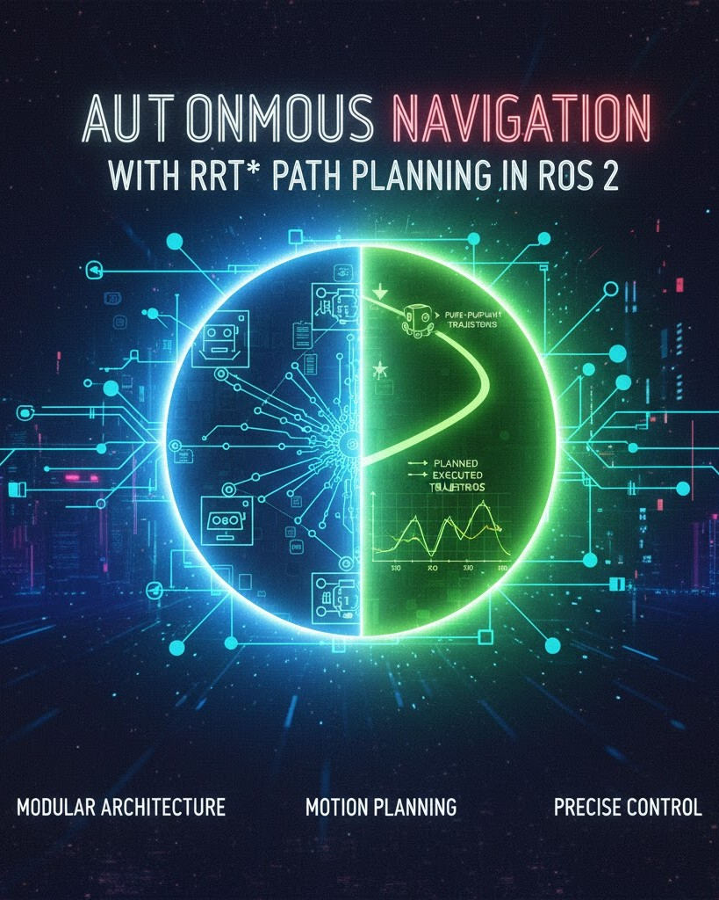
Autonomous Navigation with RRT* & A*
Kinematic movement stack implemented in ROS 2. Combines RRT* / A* path planning with Pure-Pursuit navigation loop.
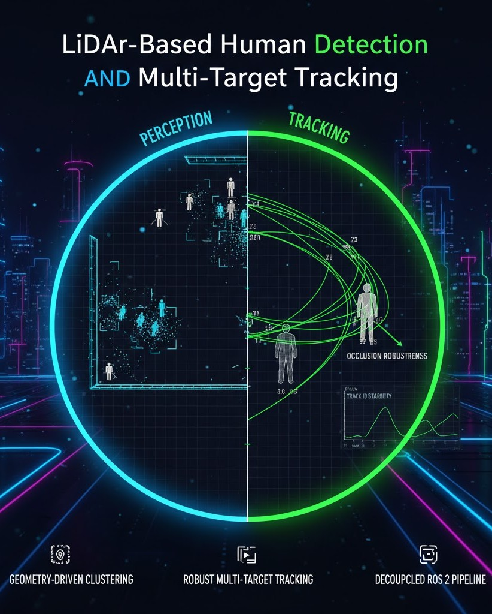
LiDAR Human Detection & Multi-Target Tracking
2D LiDAR range perception loop, utilizing Euclidean clustering and Hungarian data association for real-time tracking.
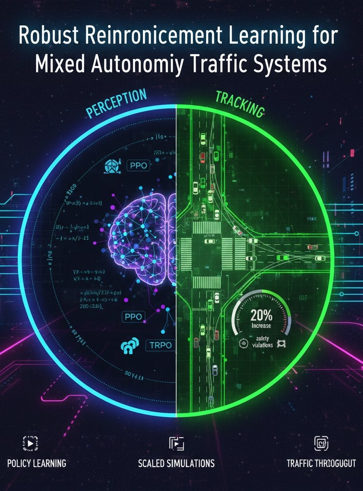
Robust RL for Mixed Autonomy Traffic Systems
Trained PPO & TRPO policy networks on ring-road simulations in SUMO, optimizing traffic throughput velocity by 20%.
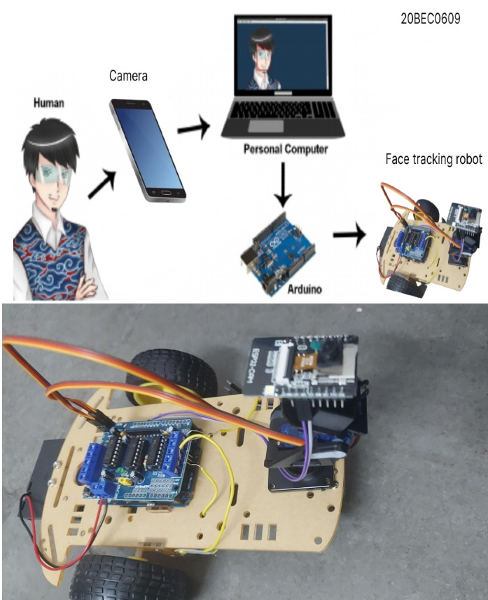
Face Tracking Mobile Robot Base
4-wheeled hardware chassis incorporating vision models to track, center, and target people dynamically.

Brain Tumor sub-region Segmentation
Deep learning architectures (W-Net/U-Net) achieving 90%+ edge segmentation bounds inside Brain MRI volumes.
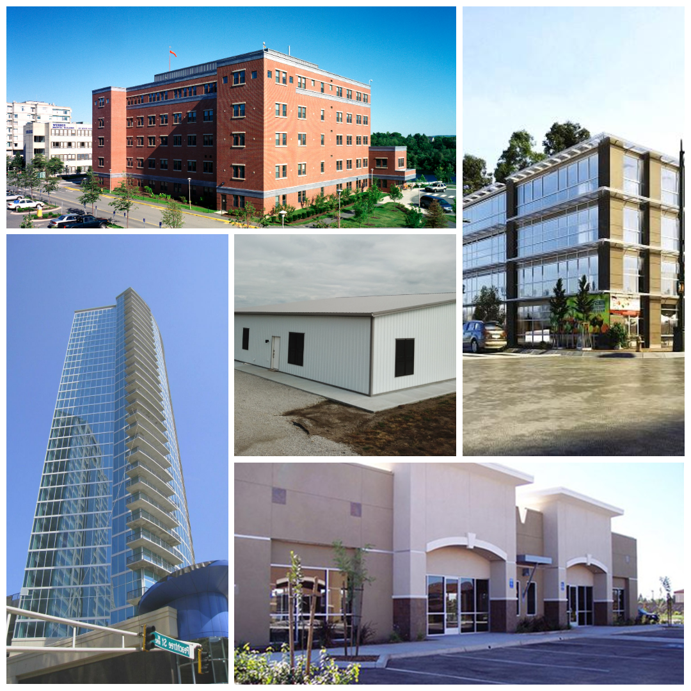
Vision Transfer Learning on Transformers
Fine-tuning DeiT transformer architectures, implementing custom learning rates, and heavy data augmentations.
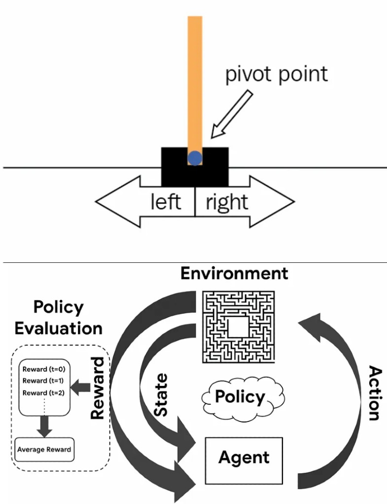
Cartpole stabilization with Q-learning
Discrete state space modeling and reinforcement learning implementation to stabilize dynamic inverted pendulum loops.
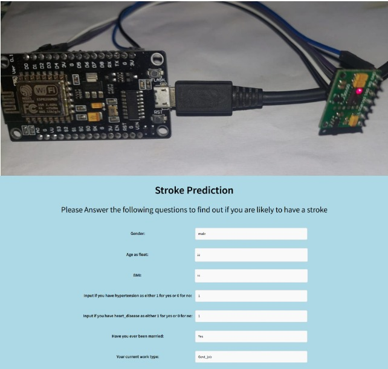
IoT Health Monitor & Stroke Prediction
Engineered wearable microprocessors (ESP32) reading vitals, connecting to ML classifiers predicting cardiovascular risks.